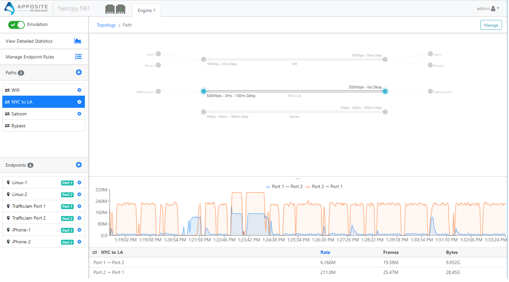

Netropy Network Emulator
In this post i will be talking about Netropy which is a product of company name Apposite. Netropy is a WAN Emulator which let developers to test their system, server, products before they launch it. It is a GUI base service but a user can also use it by calling Restful API. This is a tool that let you create a real world enviornment in your labs. With its graph visual, user can monitor how the data is transfering from one point to another.
Features
1. Create Paths
2. Create End points
3. Restful API
4. Statistics
5. Single Path Graphs
6. Detailed Statistics Graphs
Path
Path is your environment where you can add bandwidth, latency, loss and many other options. And you can add up to 30 paths.
Endpoints
Endpoints represent devices and this is where you specify the ip to your devices. This shows where the traffic is coming in and where its going to.
How does it work
This works like this:
Step 1. You creat a path whatever you are trying to test e.g 5G network.
Step 2. You creat two endpoints (can have more) and attache each endpoint on each side of the path you created.
Step 3. You send some request from device (endpoint) to other.
Step 4. You will be able to see how the traffic is going over the network you created.
This is just one simple quick example but user can do more than this. It comes in many models including VM and cloud base services like AWS. All the information realated to different models are on their website apposite-tech.com. It all depends on a user need what kind of test they need to run and a specif model will be needed for the user.
